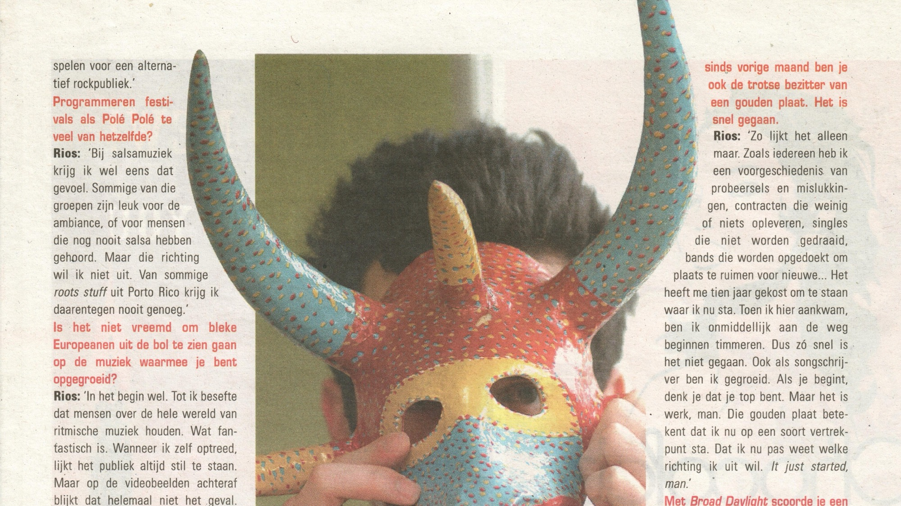

Zone 09 – Cultuur- en muziekjournalistiek
In 2005 en 2006 werkte ik als freelance cultuur- en muziekjournalist voor Zone 09, een gratis wekelijks stadsmagazine van De Persgroep. Het blad bracht een overzicht van het culturele leven in Gent, met aandacht voor concerten, tentoonstellingen, theater, film en andere evenementen. Als journalist ging ik op zoek naar de mensen achter die activiteiten, van internationaal bekende muzikanten tot kunstenaars en organisatoren uit de Gentse cultuurwereld.
Voor Zone 09 interviewde ik onder anderen Gabriel Rios, Helmut Lotti, Dirk Blanchart, Jody Stephens van de Amerikaanse cultgroep Big Star en Glen Hansard van The Frames. Ook de Gentse kunstscene kwam uitgebreid aan bod, met gesprekken met onder meer Philippe Van Cauteren, destijds de nieuwe artistiek directeur van het S.M.A.K., kunstenaar Rik Vermeersch en de artistieke coördinator van kunstencentrum Vooruit.
Een bijzondere plaats in Zone 09 was weggelegd voor de columns van Luc De Vos. De frontman van Gorki schreef over Gent, het leven en alles wat daartussen lag, met een onnavolgbare mengeling van absurde humor, zelfspot en melancholie. Zijn teksten konden alle kanten uitgaan, maar waren altijd onmiskenbaar van hem. Ik las zijn columns met veel plezier en vond het een hele eer om met mijn artikels geregeld in hetzelfde magazine te staan als deze Gentse volksheld.